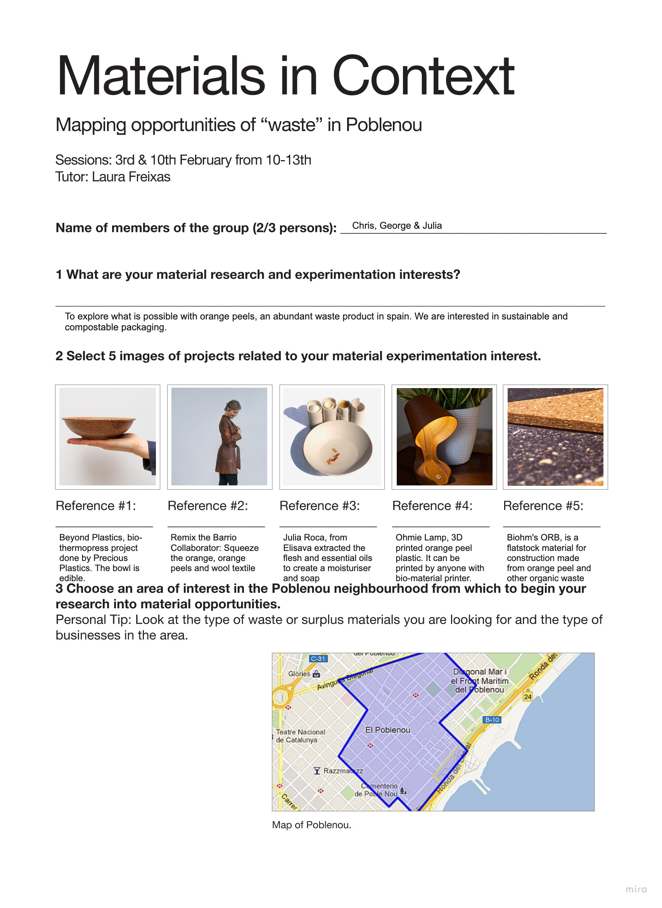
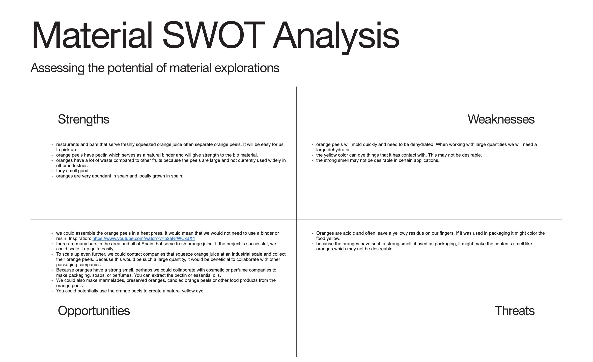
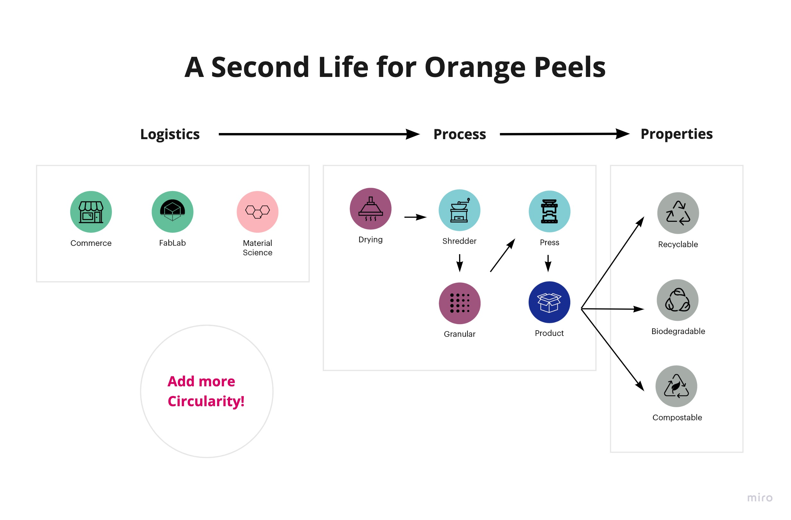

Discovering recycling opportunities with Laura Freixas
To deeper dive into biomaterials and the potentials they have in combination with community outreach, Laura Freixas introduced us to Remis El Barrio and the principles of creating a circular economy in the neighborhood.

Mapping interests ad local stakeholders.

A classic SWOT analysis for the material of orange peels.

Circular material flow diagram in progress...